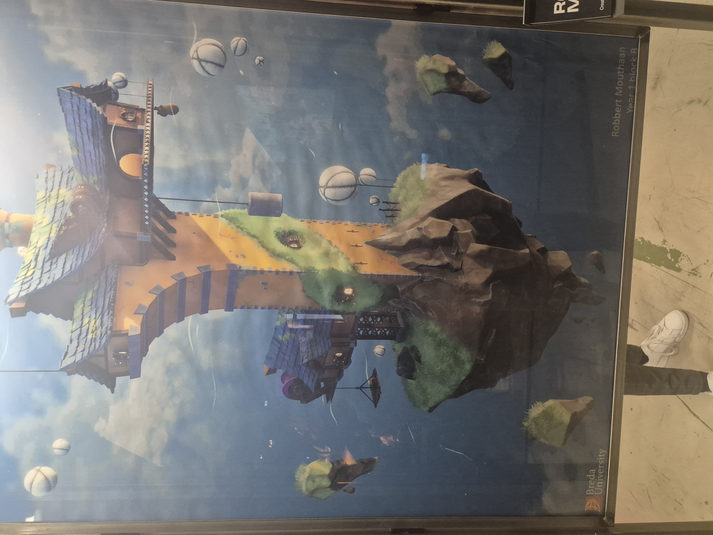
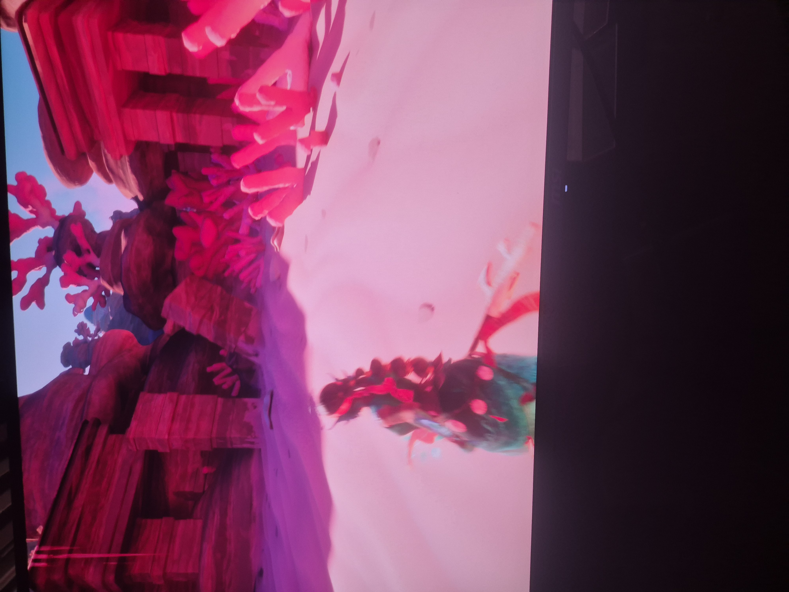
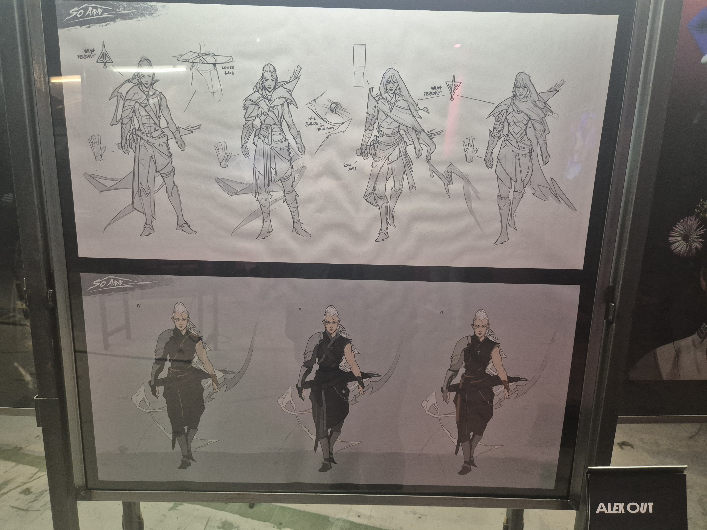
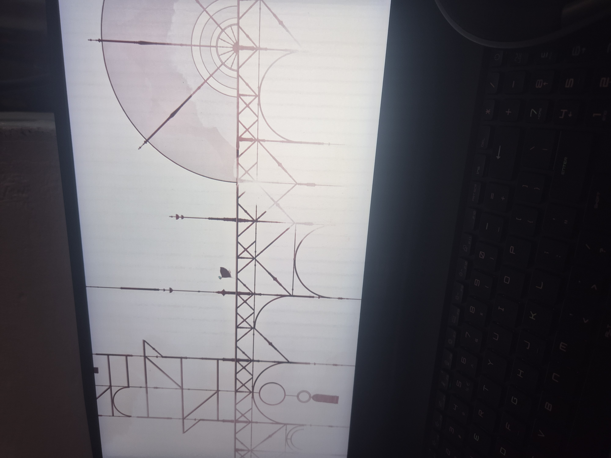
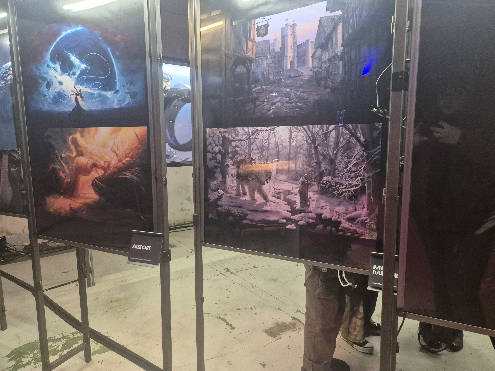
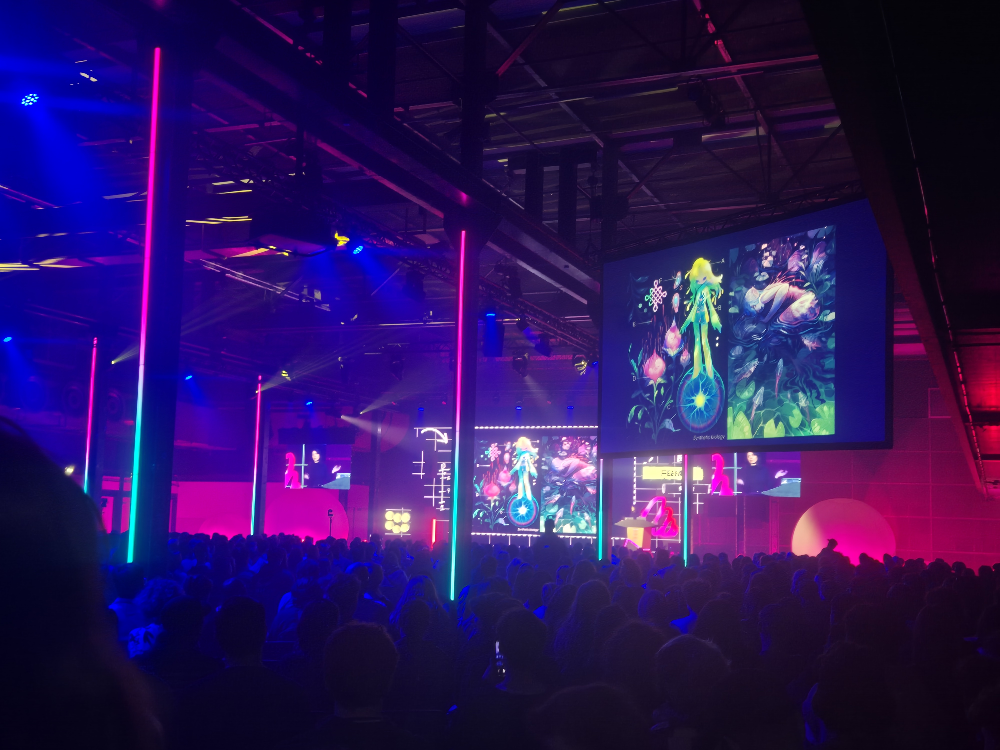

LO 5 – Persoonlijk Leiderschap
Deze leeruitkomst gaat over wie ik ben als maker, wat mij drijft en hoe ik mijn leerproces richting geef. Dit semester heb ik vooral gewerkt aan het vinden van mijn eigen stijl, en geleerd hoe ik omga met onverwachte wendingen, stress en inspiratiebronnen van buitenaf.
🔗 Bewijsmateriaal
-
🌐 Over Mij & Reflecties
Hier beschrijf ik mijn achtergrond, motivatie en leerdoelen.
-
🎯 Onderzoek – Wii Project
Onderzoek naar games, gameplay en designkeuzes voor mijn persoonlijke project.
📌 Reflectie
Mijn stijl en interesses komen duidelijk terug in dit portfolio. Alles wat ik gemaakt heb voelt persoonlijk, van de visuals tot de manier waarop ik mijn verhaal vertel. In de loop van het semester ben ik steeds meer gaan experimenteren met wie ik ben als maker.
Ik heb dit semester niet altijd actief feedback opgezocht, maar ik heb wel geleerd om beter te herkennen wanneer feedback waardevol is — en wat ik ermee kan. Vooral tijdens het UX-project heb ik gemerkt dat de mening van anderen mijn werk echt beter maakt, en dat je niet altijd hoeft te wachten tot iemand iets zegt: soms zie je het zelf al door een stap terug te nemen.
De grootste verandering zat ‘m voor mij in mijn persoonlijke ambities. Tijdens het werken aan mijn eigen project (Project X – Online Wii) kwam ik erachter dat ik het bouwen van games niet alleen leuk vind, maar dat ik dit ook professioneel wil aanpakken. In de een-na-laatste week van dat project besloot ik het volledige concept om te gooien omdat mijn originele plan (sprites maken) te veel vertraging opleverde. Dat was stressvol, maar het liet me wel zien dat ik onder druk kan presteren en snel kan schakelen.
Een belangrijk moment dit semester was het bezoek aan We Are Playgrounds — een design en animatie-event dat we met school bezochten. Daar kreeg ik een visitekaartje van een spreker, wat me inspireerde om na te denken over hoe ik mezelf als maker presenteer. Sindsdien ben ik bezig met mijn eigen merkidentiteit: ik heb een logo ontworpen, een YouTube-kanaal opgezet en ben zelfs begonnen op Fiverr om freelance werk te proberen.
Al deze stappen helpen mij om beter te begrijpen wat voor maker ik wil zijn. Het gaat voor mij niet alleen om goed werk leveren, maar ook om mezelf neerzetten als iemand met een visie, een stijl en een verhaal.
📷 Beelden van We Are Playgrounds

Inspirerend werk van een BUAS-student, kleurrijk en technisch sterk uitgewerkt.

Testen van een unreleased game – geweldige visuele stijl en mechanics.

Concept art van een professioneel ogende character designer.

Tweede game die ik testte, met unieke minimalistische visuals.

Gave stijlstudies en storytelling via environment art.

Panel over visual storytelling – groot, kleurrijk en leerzaam.